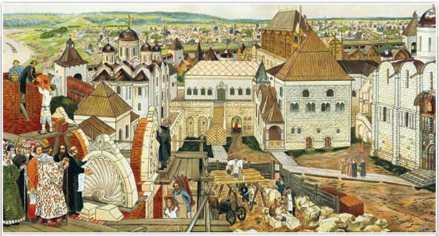
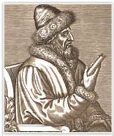
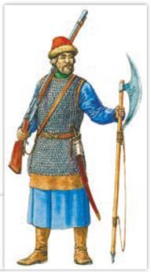
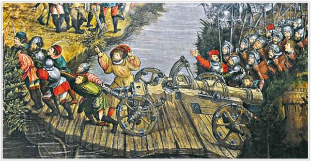
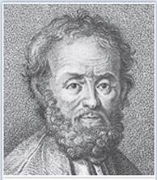
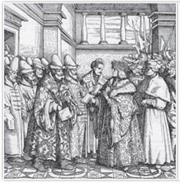

В Московском Кремле. Художник А. Васнецов
Один из современников Аполлинария Васнецова писал: «Думалось, как же может человек так изучить и так изображать старину. Словно ведь с натуры списано. Показывали же старину многие художники, но в их картинах жили только люди, а здесь живёт, дышит и рассказывает каждый камень стены, каждая маковка церкви, каждое бревно сруба».
РОССИЯ
МИР
1. Укрепление великокняжеской власти. После смерти Ивана III на московский престол взошёл его сын Василий III (1505—1533). Новый государь особенно дорожил своей властью, возможно, ещё и оттого, что не сразу был выбран наследником. Став государем, Василий III первым делом приказал «оковать в железа» сына Ивана Молодого Дмитрия, которого Иван III короновал шапкой Мономаха, но потом отправил в ссылку в Углич.
Иван III пробовал найти Василию невесту при дворах европейских правителей, вёл переговоры о браке наследника с датской принцессой Елизаветой, но дело не заладилось. В сентябре 1505 г. Василий женился на Соломонии Сабуровой, происходившей из старомосковского боярского рода.

Василий III. Гравюра. XVI в.
Подробнее. По завещанию отца Василий III получил две трети русских земель, а его братья — удельные князья — только одну треть. Они не могли чеканить монету в своих уделах, собирать московскую торговую пошлину, торговать в Москве и подмосковных сёлах, судить за убийство. Василий III запретил им вступать в брак, пока у него самого не появится сын. Но ожидание наследника престола затянулось на долгие 25 лет. Сыновья Ивана III умирали бездетными, их уделы отходили Василию III, происходило отмирание удельной системы.
Возвышение власти великого князя московского получило обоснование в религиозной теории «Москва — Третий Рим». Её сформулировал монах псковского Елизарова монастыря Филофей. «Два Рима пали,
Третий стоит, а Четвёртому не бывать». По мысли Филофея, Древний Рим пал под ударами варваров, второй Рим (Византия) пошёл на союз с католиками и погиб под натиском мусульман. Центром православного мира, хранительницей истинной веры стала Москва, а её государь теперь является преемником римских и византийских императоров.
2. Присоединение Псковской земли. Во всех делах — внутренних и внешних — Василий III был продолжателем линии своего отца. Одним из главных направлений его политики стало завершение собирания русских земель вокруг Москвы. В начале XVI в. оставались две независимые территории — Псковская земля и Рязанское княжество.
Вечевой Псков делился на девять «концов» и управлялся девятью выборными посадниками. Великий князь отправлял в Псков своего наместника. В отличие от Новгорода 1470-х гг., Псковская республика давно шла в русле московской политики и не пыталась заключить договор с Литвой. Однако это не уберегло её независимость.
Осенью 1509 г. к Василию III, который тогда был в Новгороде, пришли знатные псковичи с челобитной. Они жаловались на московского наместника, которым были, по их словам, «приобижены».
Государь вызвал в Новгород и наместника, и посадников. Начался суд, посадников арестовали, а в Псков поехал дьяк с государевым приказом: вече отменить, вечевой колокол снять, в Пскове и его «пригородах» принять наместников из Москвы.
На восходе солнца 13 января 1510 г. последний раз ударил псковский вечевой колокол. Жители города приняли требования Василия III. Колокол сняли с колокольни у Троицкого собора. Горожане, как сообщает летописец, «плакали по своей старине и по своей воле».
Триста семейств были выселены из Пскова. По словам летописца, «ужас и стон господствовал в Пскове». Многие посадские люди, боясь ссылки, отдавали своё имущество монастырям, сами уходили в монахи, лишь бы умереть на родине. Вскоре из Среднего города, где было 6500 дворов, также были выселены все жители. Их дома заняли купеческие семьи из Москвы, дети боярские и новгородские пищальники.
Подробнее. 24 января 1510 г. Василий III въехал в безмолвный Псков. Через три дня посадников, бояр, купцов и всех «лучших людей» собрали в судной избе. Им огласили государев указ: «Знатные псковитяне! Великий князь, Божьей милостью царь и государь всея Руси... не хочет вступаться в вашу собственность: пользуйтесь ею ныне и всегда. Но здесь не можете остаться: ибо вы утесняли народ, и многие обиженные вами требовали правосудия. Возьмите жён и детей; идите в землю московскую и там благоденствуйте милостью великого князя».

Русский пищальник времён правления Василия III
Пищаль — ручное огнестрельное оружие. Историки полагают, что в первой половине XVI в. пищальники были отдельным видом пехоты.
В Пскове и его «пригородах» появились московские наместники. На все торговые сделки вводилась пошлина в пользу московского великого князя, чеканка монеты была запрещена.
3. Включение в состав Российского (Русского) государства Смоленска. Правители Великого княжества Литовского хотели вернуть потерянные в конце XV в. Чернигово-Северские земли и Верховские княжества. Однако Василий III, как и его отец, считал все территории, где в древнерусские времена правили Рюриковичи, своими вотчинами.
В 1507 г. шла очередная русско-литовская война, в ходе которой московское подданство принял влиятельный литовский магнат Михаил Львович Глинский вместе с 2 тыс. вооружённых слуг. Василий III пожаловал ему города Ярославец и Боровск. Русско-литовский конфликт завершился миром в 1508 г. без территориальных потерь для обеих сторон.
В 1512 г. разразилась ещё одна русско-литовская война, после того как Литва заключила с Крымским ханством антимосковское соглашение. Московские полки безуспешно пытались овладеть хорошо укреплённым Смоленском. Наконец, в 1514 г. к городу подошла 15-тысячная русская армия. На вооружении она имела мощную по тем временам осадную артиллерию. Помимо русских, пушкарями в ней служили выходцы из разных стран Европы.

Битва под Оршей. Переправа польской армии. Фрагмент. Неизвестный художник. XVI в.
На основе иллюстраций и текста параграфа расскажите, какие изменения происходили в вооружении русской армии и армий других государств в эпоху «пороховой революции». В каких сражениях русская армия использовала новые виды оружия?

Иван Хабар. Гравюра. Государственный исторический музей. Москва
ЧЕСТЬ И СЛАВА ОТЕЧЕСТВА
В 1521 г. Мухаммед-Гирей совершил поход на Москву, а на обратном пути подошёл к Рязани. Рязанцы во главе с воеводой Иваном Хабаром отбили нападение Мухаммед-Гирея. Тогда разъярённый хан отправил к ним своих послов с долговой грамотой от Василия III. Принятие грамоты означало возобновление выплаты дани Крымскому ханству. Но Хабар выманил грамоту и разорвал её на глазах у ханских послов. Мужественный воевода Хабар не только защитил Рязань, но и спас честь великого князя Василия III. Государь приказал пожаловать Ивану Васильевичу Хабару чин боярина, а описание «столь знаменитой услуги внести в книги разрядные и в родословные на память векам». В XIX в. на стене колокольни Рязанского кремля в честь Ивана Хабара была установлена памятная доска.
Большую активность при осаде Смоленска проявил Михаил Глинский. Он надеялся, что в случае успеха Василий III пожалует ему смоленский удел. Мощный артиллерийский обстрел и призыв Глинского сдаться подействовали на защитников города — они открыли крепостные ворота. Так в 1514 г. Смоленск был присоединён к Российскому государству. Василий III обещал жаловать смолян «по их старине», то есть сохранить их права и льготы. Большинство жителей были православными, они присягнули Василию III. Тех, кто не захотел принять московское подданство, отпустили в Литву.
Возвращение в состав России Смоленска не стало окончанием русско-литовской войны. В сентябре 1514 г. произошла битва под Оршей. Русская армия вынуждена была отступить, но и Литва не вернула себе Смоленскую землю. Война завершилась только в 1522 г. перемирием, по которому Смоленск остался за Россией. Это была важная победа Василия III. Российское государство наращивало территорию и силы, претендуя на роль ведущей восточноевропейской державы.
Пока Василий III выяснял отношения с крымским ханом, рязанский князь Иван Иванович сбежал из-под ареста в Литву. В 1521 г. Рязанское княжество вошло в состав Российского государства.
4. Россия и Западная Европа. На рубеже XV—XVI вв. Россия (как и Англия, Франция, Испания) двигалась в сторону создания единого государства с сильной монархической властью. Различие состояло в том, что в России главную роль в объединении земель играли не внутренние, а внешние причины. На юге и востоке Москва противостояла ханствам — осколкам Золотой Орды, на западе и севере боролась с Литвой.
XV—XVI вв. стали временем «пороховой революции» в Европе. Средневековая рыцарская конница уступала место регулярной пехоте, вооружённой огнестрельным оружием. Теперь большую роль на поле битвы играли пушки. На службе у Василия III состояли не только иностранные архитекторы и инженеры, пушкари и оружейники, как это было при Иване III. Посол Священной Римской империи С. Герберштейн писал в «Записках о Московии» об отряде великокняжеских телохранителей из «немцев», а также о западных наёмниках, вооружённых аркебузами. В России эти «ручные пушки» называли пищалями. В Москве появилась целая слобода, где жили служилые иноземцы.

Максимилиан I принимает послов Василия III. Художник Г. Бургмайр. XVI в.
Как и Иван III, Василий III поддерживал контакты с разными странами. В Москву дважды приезжало посольство императора Священной Римской империи Максимилиана I. Русские послы неоднократно бывали в Италии, в том числе и у папы римского. Россия активно перенимала у Западной Европы культурный, военный и технический опыт. Большую роль при этом играли европейские специалисты, нанимавшиеся на русскую службу.
Какие сведения можно получить, рассмотрев эту гравюру?
Если российская сторона извлекала из контактов с западноевропейцами различного рода опыт, то Святой престол и Габсбурги пытались с помощью России остановить османский натиск на Европу. Василий III осознавал, что у его державы недостаточно сил для столкновения с Турцией, поэтому уклонялся от всех предложений Ватикана и поддерживал с османами добрые отношения. Отвергал он и попытки начать переговоры о церковной унии.
5. Женитьба Василия III на Елене Глинской. Василий III так и не дождался рождения наследника в 20-летнем браке с Соломонией Сабуровой. Великий князь отважился на невиданный по тем временам поступок — развод с женой. Дело о разводе не только повлияло на наследование престола, но и сказалось на отношениях государя и церкви.
В начале правления Василия III продолжались религиозные споры. Нестяжателей, отвергавших монастырские владения, государь сначала поддерживал. Он, очевидно, хотел отобрать у церкви часть её вотчин. Однако нестяжатели осудили желание Василия III развестись с женой. Православная церковь допускала развод лишь при уходе в монастырь одного супруга с согласия другого. Иосифляне, наоборот, считали развод великого князя государственной необходимостью. Их точка зрения победила.
Боярская дума и митрополит одобрили развод великого князя. Княгиня Соломония была насильственно пострижена в монахини и отправлена в суздальский Покровский монастырь. В 1526 г. митрополит Даниил благословил государя на брак с юной литовской княжной, красавицей Еленой, племянницей Михаила Глинского. В конце того же года Василий III по просьбе жены вновь приблизил к себе Глинского.
ПОДВЕДЁМ ИТОГИ
При Василии III завершилось объединение русских земель вокруг Москвы. Военные и дипломатические успехи укрепили международное положение России как независимого и влиятельного государства. Концепция «Москва — Третий Рим» провозглашала Россию наследницей Византии.
Вопросы и задания
Работаем с хронологией
Определите хронологический порядок событий:
Работаем с источником
Прочитайте отрывок из книги историка Н. Костомарова «Господство дома Святого Владимира» и ответьте на вопрос.
Историки называют царствование Василия продолжением Иванова. В самом деле, мало в истории примеров, когда бы царствование государя могло назваться продолжением предшествовавшего в такой степени, как это. Василий Иванович шёл во всём по пути, указанном его родителем, доканчивал то, на чём остановился предшественник, и продолжал то, что было начато последним.
Работаем с понятиями
Дайте определение понятий «челобитная», «слобода».
ДОПОЛНИТЕЛЬНЫЕ МАТЕРИАЛЫ
«УЧИТЕЛЮ И УЧЕНИКУ».
Материалы к параграфу на портале «История.РФ».